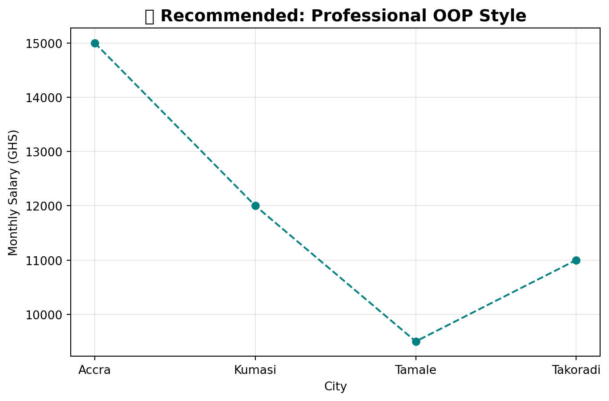
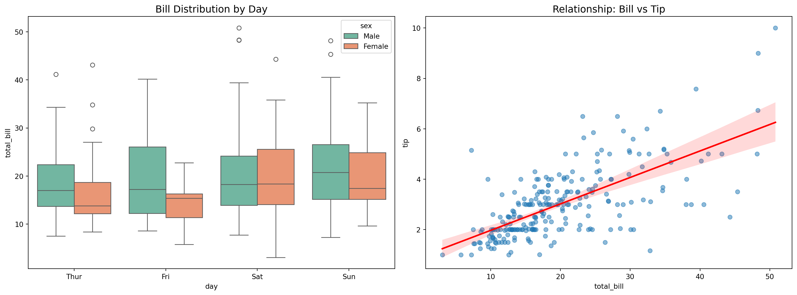
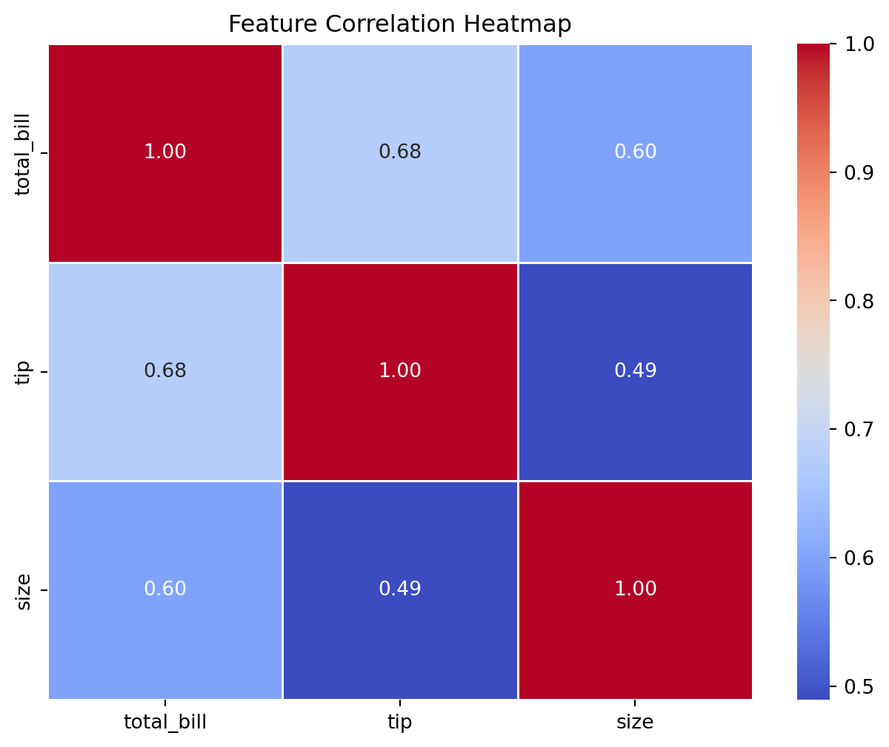

Why we avoid it: It becomes “Spaghetti code” quickly. If you have two different figures, Matplotlib loses track of which one is current, leading to bugs.
✅ The Explicit Interface (The OOP Way) - Recommended
This is the Professional Standard. You explicitly create “Figure” and “Axes” objects.
# Create the figure (the canvas) and the axes (the drawing area)fig, ax = plt.subplots(figsize=(8, 5))# Use the AXES object to drawax.plot(cities, salaries, marker='o', linestyle='--', color='teal')# Set properties on the AXES objectax.set_title("✅ Recommended: Professional OOP Style", fontsize=14, fontweight='bold')ax.set_xlabel("City")ax.set_ylabel("Monthly Salary (GHS)")ax.grid(True, alpha=0.3)plt.show()
/home/siseng_ai/Documents/Ubuntu_2404/Speedykom/Ghana_AI/TrainingMaterials/.venv/lib/python3.13/site-packages/IPython/core/pylabtools.py:170: UserWarning:
Glyph 9989 (\N{WHITE HEAVY CHECK MARK}) missing from font(s) DejaVu Sans.

3. Why Explicit (OOP) is the AI Standard
As an AI Engineer, you aren’t just making one plot. You are making dashboards, sub-plots, and integrated pipelines.
Seaborn is built on top of Matplotlib. It focuses on what you want to plot rather than how to draw every line. Its greatest strength is handling DataFrames natively and making complex statistical visualizations with single lines of code.
5.1 The Seaborn Integration Pattern
To use Seaborn in a professional (OOP) workflow, you create your ax object first, then pass it to the Seaborn function.
import seaborn as sns# Load a classic datasettips = sns.load_dataset("tips")fig, (ax1, ax2) = plt.subplots(1, 2, figsize=(16, 6))# 1. Boxplot (Distribution analysis)sns.boxplot( data=tips, x='day', y='total_bill', hue='sex', palette='Set2', ax=ax1 # <--- THE KEY: PASSING THE AXES)ax1.set_title("Bill Distribution by Day", fontsize=14)# 2. Regplot (Relationship analysis)sns.regplot( data=tips, x='total_bill', y='tip', scatter_kws={'alpha':0.5}, line_kws={'color':'red'}, ax=ax2 # <--- THE KEY: PASSING THE AXES)ax2.set_title("Relationship: Bill vs Tip", fontsize=14)plt.tight_layout()plt.show()

5.2 Heatmaps for Feature Correlation
In AI Engineering, you will constantly use Heatmaps to check for “Multicollinearity” (when features are too similar).
# Create a correlation matrix of numeric columnscorr_matrix = tips.select_dtypes(include=[np.number]).corr()fig, ax = plt.subplots(figsize=(8, 6))sns.heatmap( corr_matrix, annot=True, cmap='coolwarm', fmt=".2f", linewidths=0.5, ax=ax # <--- THE KEY: PASSING THE AXES)ax.set_title("Feature Correlation Heatmap")plt.show()

TipWhy Seaborn + OOP is the “Gold Standard”
Seaborn handles the complex math (like regression lines and density estimates), while Matplotlib’s ax gives you surgical control over titles, labels, and layout. This combination is what you see in top-tier AI research papers.
6. Other Plotting Powerhouses
While we focus on Matplotlib/Seaborn, keep these in your toolkit:
Plotly Express: The favorite for interactive web apps (Dashboards).
Altair: Declarative plotting (similar to the “Grammar of Graphics” in R’s ggplot2).
Bokeh: Best for high-performance interactive plots on huge datasets.
7. Practice Challenge: Ghana Tourism Analysis
Given the following tourism data, create a professional figure with two subplots (side-by-side): 1. A line plot showing tourists over time. 2. A bar chart showing revenue by region.
Requirement: Use the Explicit (OOP) fig, ax interface.
tourism_years = [2018, 2019, 2020, 2021, 2022]tourists_k = [950, 1130, 350, 620, 980] # Drop due to 2020regional_revenue = pd.DataFrame({"region": ["Greater Accra", "Ashanti", "Central", "Volta"],"revenue_m": [120, 85, 95, 45]})# Your Solution Here:# fig, (ax1, ax2) = ...
8. What’s Next?
We’ve turned data into insights. But what if the data is messy? In the final module, we tackle Data Integrity.